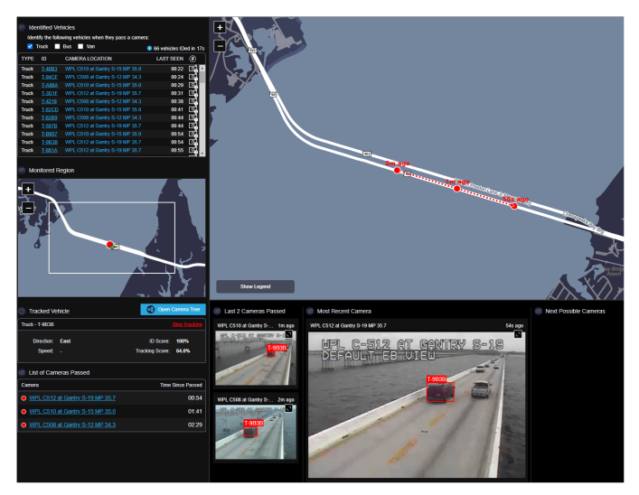
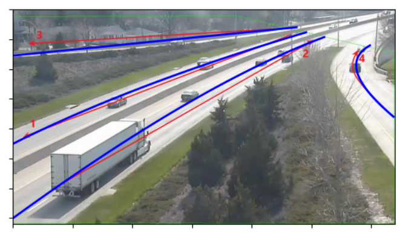
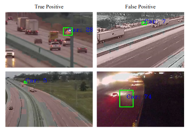
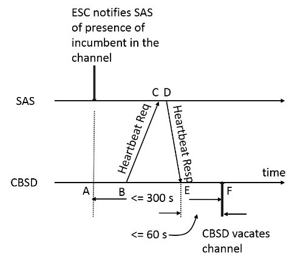

|
Research
I am broadly interested in computer vision, with focuses on multi-camera detection and tracking as well as few-shot learning. My representative works are below.
|
|

|
Scalable and Real-time Multi-Camera Vehicle Detection, Re-Identification, and Tracking
Pirazh Khorramshahi, Vineet R. Shenoy, Michael Pack, Rama Chellappa
IEEE Transactions on Intelligent Transportation Systems (under review), 2022
We develop a real-time multi-camera tracking system that works on operational camera data. We integrate the system into the RITIS platform and evaluate our algorithms on the AICITY 2021 Multi-Camera Tracking dataset
|
|

|
Multi-Class, Multi-Movement Vehicle counting on Traffic Camera Data
Vineet R. Shenoy, Pirazh Khorramshahi, Rama Chellappa
Technical Report, 2022
We classify vehicle actions as such as "right turn", "left turn" and "straight through" by solving a sixth-order polynomial that depends on the vehicle's trajectory and the parametric definition of a movement.
|
|

|
Towards real-time systems for Vehicle Re-Identification, Multi-Camera Tracking, and Anomaly Detection
Neehar Peri, Pirazh Kohrramshahi, Sai Saketh Rambhatla, Vineet R. Shenoy, Saumya Rawa, Jun-Cheng Chen, and Rama Chellappa
Conference on Computer Vision and Pattern Recognition Workshops , 2020
paper /
bibtex
As a part of the NVIDIA AI Challenge, we develop robust algorithms for multi-camera tracking, vehicle re-identification, and anomaly detection. We are among the top scoring teams on the public leaderboard
|
|

|
Study of Timing Constraints and SAS Overload in the CBRS Band using SAS-CBSD Protocol
Anirudha Sahoo, Naceur El-Ouni, Vineet R. Shenoy
IEEE GLOBECOM Workshops , 2019
paper /
bibtex
As higher priority spectrum users request access to the 3.7 GHz band, incumbent users must determine when to vacate the band and when to request more access. We study timing constraints so that the channel is used efficiently and all FCC timing requirements are met.
|
|
{kind=link}